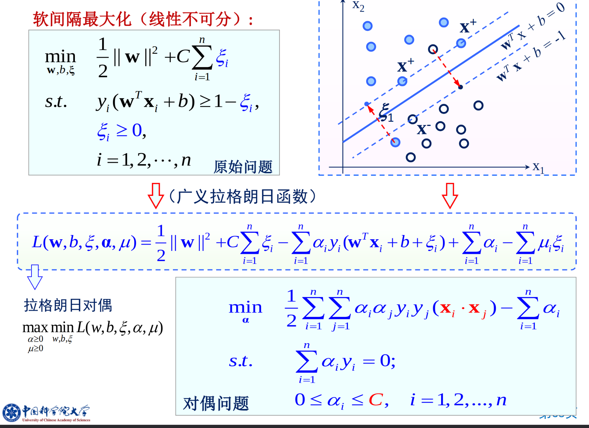

支持向量机与核方法
理论
我们始终目标是对于未知的数据获得最小的错误率。
Test error rate \(\le\) train error rate + f(N,h,p)
我们要找到一个合适的中间点，来平衡损失和模型复杂度。
VC 维：能被H打散的最大示例集大小。就是可以完全可分的数据个数。可以视作这个模型的区分能力。
VC 维度越高，分类器就越灵活。不过在实践中，大多数分类器的VC维很难精确计算。
可是，对于过于复杂的情形，假设过度适配一系列可分平面，会降低泛化性能。于是换一种思路：最大化各样本到分类面的最小距离。最大化利用高维特征空间所带来的剩余容量。
Hard-margin SVM
将线性分类器的间隔定义为在到达数据点之前可以增加的边界宽度。
如果在边界的位置上犯了一个小错误，那么造成错误分类的可能性就最小。
对于决策面为 \(g(x) = w^T x + b = 0\)，那么点x到决策面的距离为：\(r = \frac{g(x)}{||w||}\)
那么我们的目标就是 \(arg \max_{w,b} \min_{x \in D} \frac{|b + x_i w|}{\sqrt{\sum w_i^2}}, s.t. \forall x_i \in D: y_i (x_i w + b) \ge 0\)
其中 \(\forall x_i \in D: |b + x_i w| \ge 1\) 是总是可以做到的，只需要增大 \(w\) 即可。那么就转化为
\(arg \min_{w,b} \sum w_i^2, s.t. \forall x_i \in D: y_i (x_i w + b) \ge 1\)
那么线性可分类支持向量机，学习模型：估计最大间隔分类超平面。 \(arg \min_{w,b} \frac{1}{2} ||w||^2, s.t. y_i (x_i w + b) - 1 \ge 0\)，分类超平面： \(w^Tx + b = 0\)，分类决策函数：\(f(x) = sign(w^Tx + b)\)。
定义一： 对于线性可分数据集，最大间隔分类面存在且唯一。
Soft-Margin SVM
对于不能线性可分的数据，如何解决这个问题。这是一个NP难题。
我们的想法就是最小化 \(w w + C(train errors)\)，但是训练误差不能被平方线性规划表达，求解太慢。
那么就有第二个想法，最小化一个错误点到正确位置的距离。
即：对于被错分的正样本，通过加上 \(xi_i\) 变得正确分类，\(y_i (w^T x_i + b) + \xi_i \ge +1\)，同样的对于错分的负样本 \((w^T x_i + b) - \xi_i \le -1\)。
这样引入了松弛变量 \(\xi_i\)，作为软间隔。但是我们有希望可以约束 \(\xi_i\) 的大小，且不希望小于0。\(\min \sum \xi_i\)。
\(\min_{w,b} \frac{1}{2} ||w||^2 + C\sum \xi_i, s.t. y_i (w^T x_i + b) \ge 1 - \xi_i, \xi_i \le 0\)，其中前面的 \(||w||^2\) 体现了表达能力，\(\sum \xi_i\) 体现了经验风险。前面使得margin尽量大，第二项表示使得误差分类点的个数尽量小。
我们可以直接将约束放入优化表达式中：得到合页损失函数：\(\min_{w,b} \sum [1 - y_i (w^T x_i + b)]_+ + \lambda ||w||^2\)
Dual problem
Lagrange multipilers
这个其实就是一个 \(\min_x \max_{\alpha} L(x, \alpha) = \max_{\alpha} \min_x L(x,\alpha)\)
支持向量机的对偶算法
在约束最优化问题中，经常使用拉格朗日对偶性将原始问题转化为对偶问题进行求解。对偶算法往往容易求解。对偶算法可以推广到核学习。
原始问题：
\(arg \min_{w,b} \frac{1}{2} ||w||^2, s.t. y_i (x_i w + b) - 1 \ge 0\)，分类超平面： \(w^Tx + b = 0\)，分类决策函数：\(f(x) = sign(w^Tx + b)\)。
对偶问题可以写为：
\(\max_{\alpha} \min_{w,b} L(w,b,\alpha), s.t. \alpha_i \ge 0,L(w,b,\alpha) = \frac{1}{2} ||w||^2 - \sum \alpha_i \y_i(w^T x_i + b) + \sum \alpha_i\)
那么就是求解 \(\min_{w,b} L(w,b,\alpha), \Delta_w L(w,b,\alpha) \rightArrow w = \sum \alpha_i y_i x_i, \Delta_b L(w,b,\alpha) = \sum \alpha_i y_i = 0 \rightArrow \sum \alpha_i y_i = 0\)
就转化为了：\(\min_{w,b} L(w,b,\alpha) = - \frac{1}{2} \sum_i \sum_j \alpha_i \alpha_j y_i y_j (x_i x_j) + \sum_i \alpha_i\)
然后再对 \(\alpha\) 求解极大值,
\(\max_{\alpha} - \frac{1}{2} \sum_i \sum_j \alpha_i \alpha_j y_i y_j (x_i x_j) + \sum_i \alpha_i, s.t. \sum_i \alpha_i y_i = 0, \alpha_i \ge 0\)

软间隔支持向量：支撑面以外的样本点。均有 \(\alpha^* = 0\)，支持向量：\(\alpha^* > 0\)，包含位于边界上的点，两个类边界以内的，以及错分点。